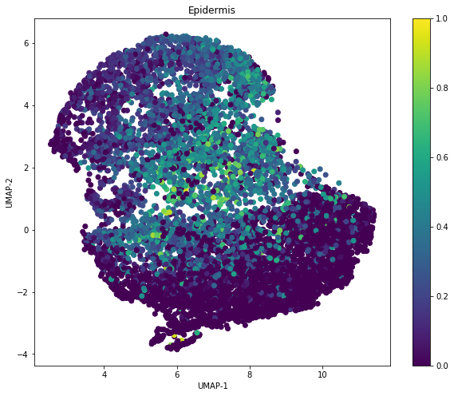

9th October 2020
And here is some writing to get the ball rolling. It should automatically wrap so that there is no awkward continuation of everything and all the words that come to meet it. It should actually be set manually in the ~/.vimrc file.
Here you can include subsections, possibly about the fact that Japanese culture is absolutely amazing and close to my heart1.
Mathematics is made possible with MathJax as follows:
\[ y = mx + 2 \\ 2 + 2 = 4 \]
And then also inline \(x + 2 = y\) like this!
A number of languages are available for syntax-highlighting. It is a bit of a pain but it is fully customisable.
Here is a multi-reference1,2, noticing that it includes hyper-links to the reference section.
You can also add images.

There is also a separate list formated as normal:
and …
After the reference heading below, pandoc will add the bibliography.
1. Thomas, S. M. Fake title for the article. OpenSource Science (2020).
2. Wrigstad, T. & Castegren, E. Mastering the art of lying. Predatory Journal (2017).